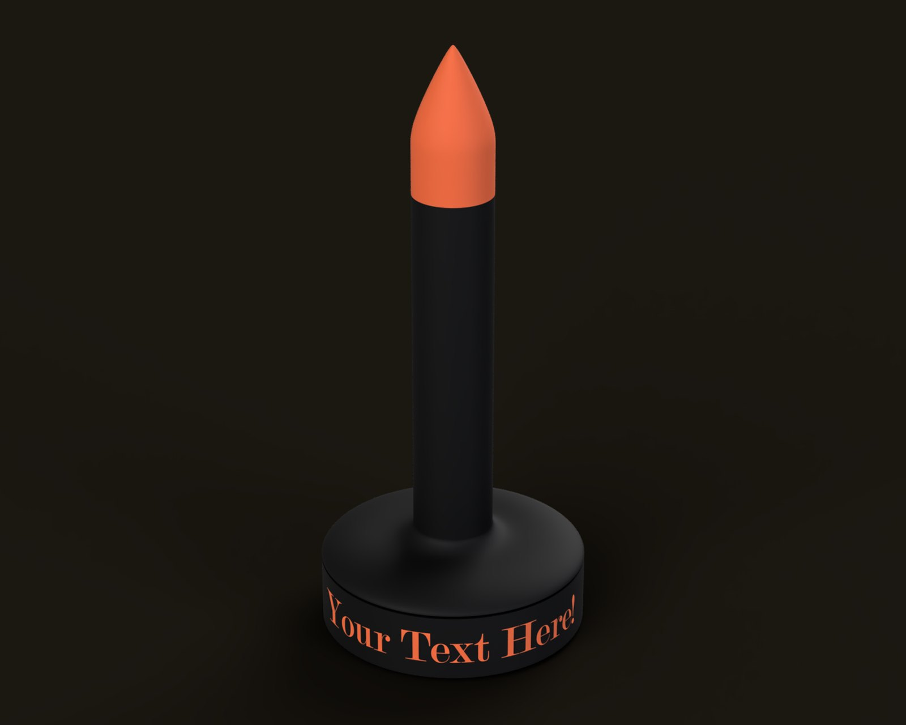
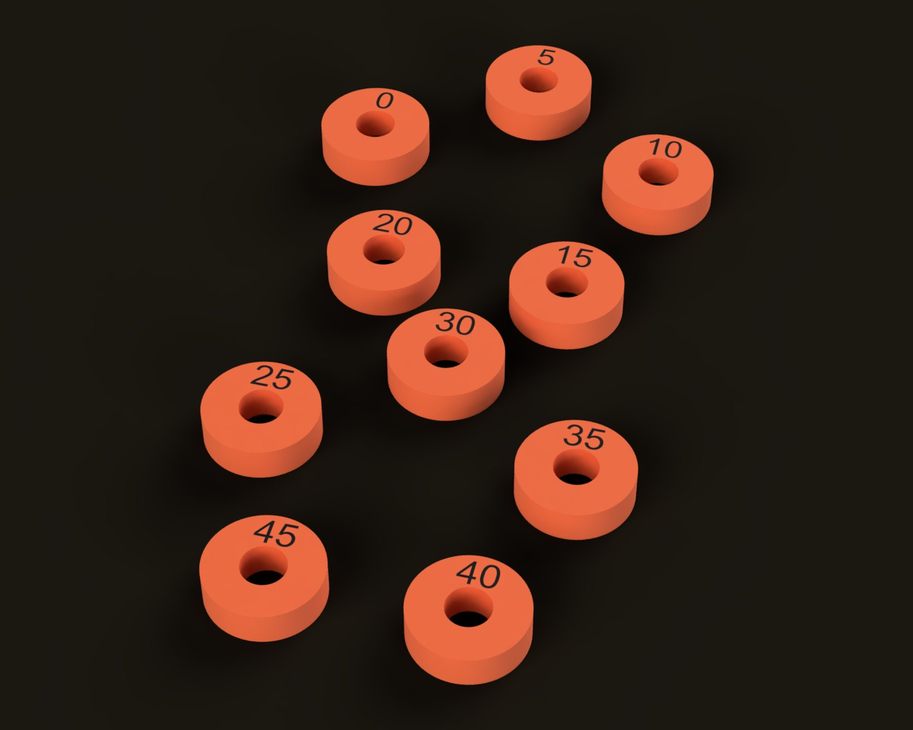
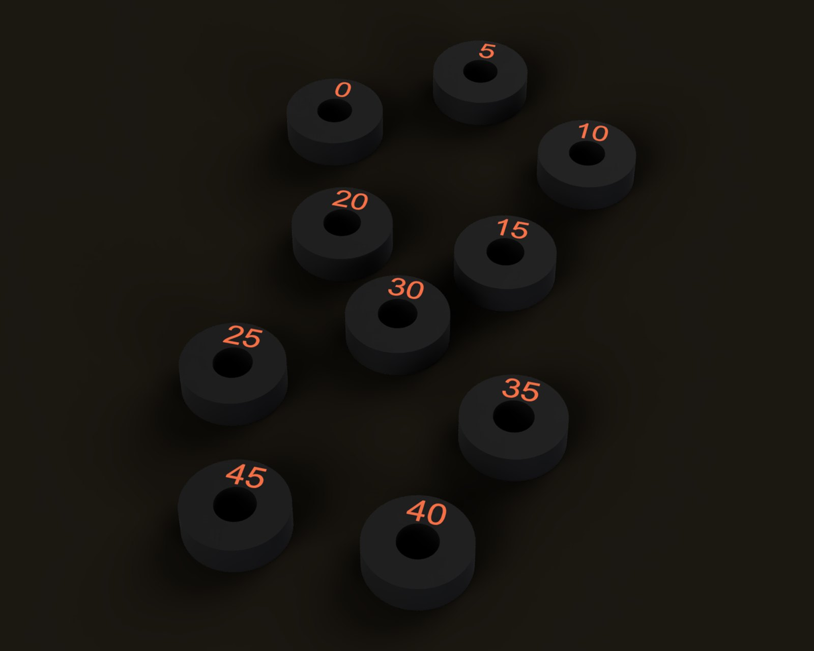
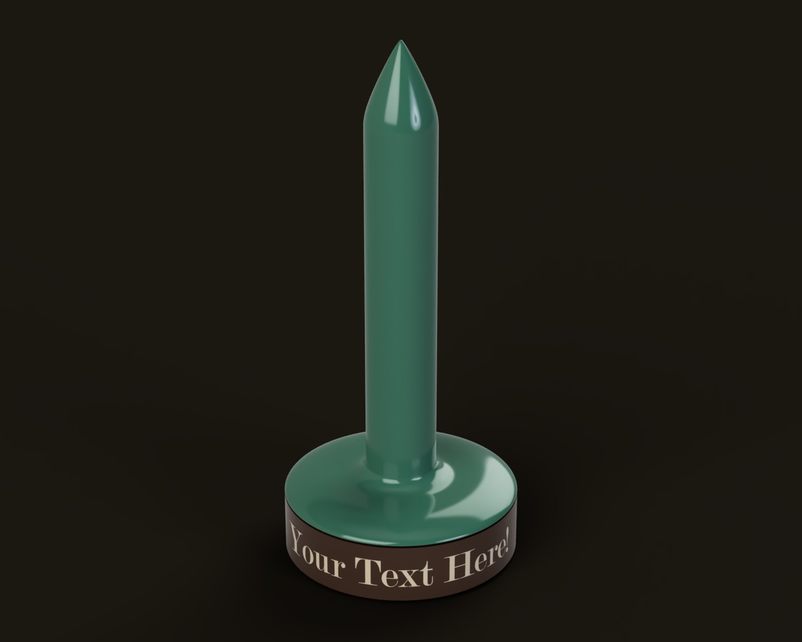
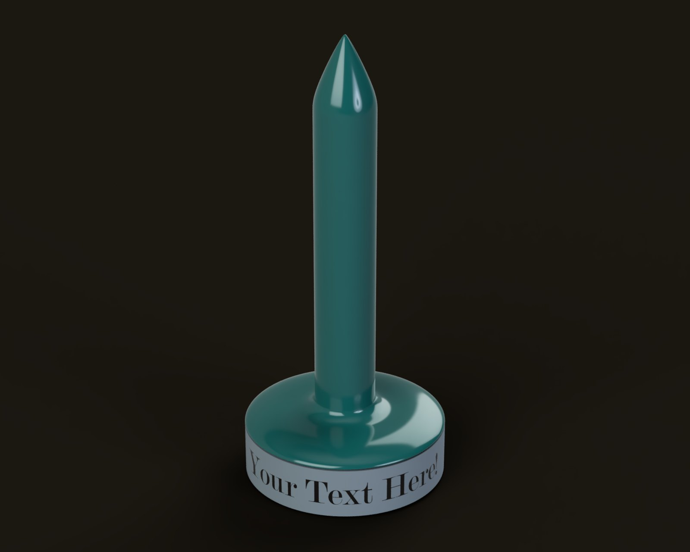
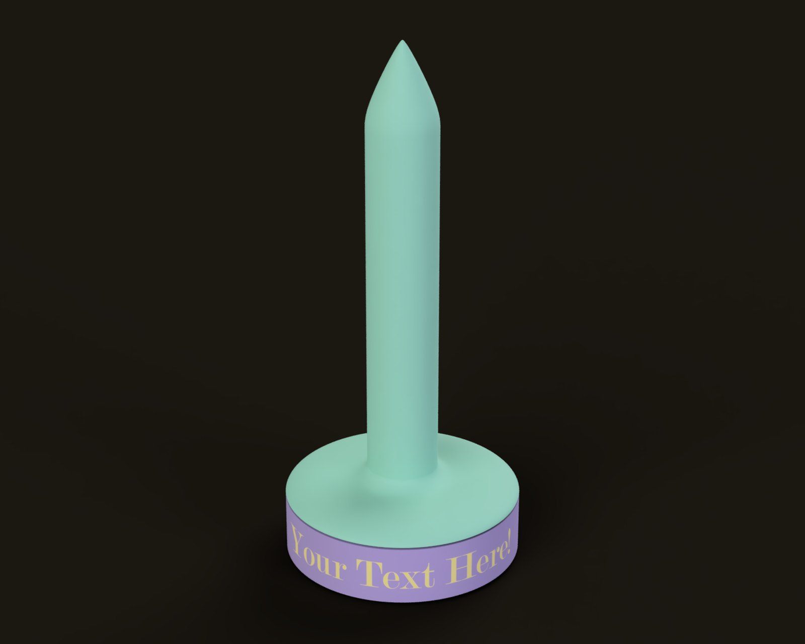

Yarn Butler
Released Nov 2025Treat your yarn to the carnival ride experience on this friction-tunable yarn butler (or stab yarn that will not behave). The barrel spins on an 8 mm rod, and a set of numbered bushings, or a 608 bearing, sets how freely it turns. The base has six pockets for the spare bushings and some extra weight, and the STEP file is included, so you can put whatever you like on the side to make a wonderful gift, prevent theft, or throw off the yarn police at the scene of the aforementioned yarn stabbing.



Renders of the model in the Prusa colors (more colors below), and the bushing set both ways round.
Specs
- Size
About 100 mm across and 225 mm tall (3.9 × 8.9 in) - Rod
8 mm × 150 mm linear rod - Friction
Ten bushings, 8.00 to 8.45 mm bore, or a 608 bearing, or nothing at all - Base
Six pockets for the spare bushings and extra weight - Feet
Three recesses for 1/2″ round rubber bumpers - Customizing
STEP file included; the text on the base is yours
Build notes
- The bushings are numbered by their bore over 8 mm, so the 0 is 8.00 mm, the 20 is 8.20 mm, and so on. Friction go up as number go down. The 35 or an unrinsed 608 bearing seemed about right to me, but personal preference and printer calibration are things that exist.
- PLA is fine for the top and the barrel, but if you plan to use screws in the base it may crack; PETG has been tested and works well. The threads work fine at 0.20 mm layers, but better at 0.10 mm, and variable layer height works well for them too.
- The rod gets pressed into the base…and by pressed I mean pounded. You will almost certainly need a hammer; the fit is intentionally…snug.
- If you’re customizing the text in Fusion 360 and the Emboss tool doesn’t like the font you picked, just try a different one.
- Usage: beats me, I don’t actually knit. Presumably if you’ve made it this far you either know how to use it or know someone who does.
Color ideas
The base, the lettering on it, the barrel and the top are all separate, so it doesn’t have to be one color. In case you can’t decide, here are a few ideas. The lettering is its own part for multi-material printers; if you’re printing in a single color, just set it to the same color as the base.
Prusa. Black base and barrel, with an orange top, lettering and bushings.

Radio. Dark brown base, jade barrel and top, ivory lettering, and oxblood bushings.

Test bench. Gray base, teal barrel and top, and black lettering and bushings.

Lavender. Lavender base, mint barrel and top, butter lettering, and mint bushings.
Files
Everything you need to build one: the parts list, the full STEP model, the printable 3MF files, and build instructions. It’s all CC BY-SA.
Get the files on Printables → Parts list and build guide